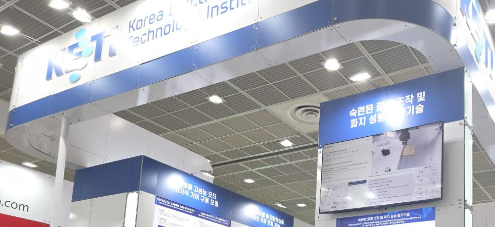

Imitation Framework for Autonomous Robot Manipulation

The task board: USB, heavy-duty, D-sub and RJ45 connectors plus a gear set, each with its own insertion tolerance — the xArm6's Robotiq Hand-E enters from the bottom right. Demonstrations were recorded by hand through a SpaceMouse.
Overview
An end-to-end framework for learning manipulation skills from human demonstration — covering data collection, policy training, and evaluation on a real robot. It was built to compare modern generative policies on a precision insertion task and to measure them with a rigorous, quantitative pipeline.
This was a team project, and the split of work is worth stating plainly: I built the teleoperation and data-collection side, while a teammate owned the learning side — the training environment, the imitation learning algorithms, and the training runs themselves.
My contribution — teleoperation & data collection
- Wrote the robot-side control code: xArm6 + Robotiq Hand-E gripper driven by a SpaceMouse 6-DoF input device, so an operator could demonstrate the task by hand instead of scripting trajectories.
- Mapped SpaceMouse twist input to end-effector motion with the Hand-E on the same loop, and streamed synchronized robot state, gripper state and RealSense frames as the demonstration record.
- Operated the rig to collect part of the human demonstration dataset the policies were trained on.
Teammate's contribution — learning & training
- Set up the imitation learning environment and implemented the generative policies — Diffusion Policy and Flow Matching — in JAX/Flax.
- Ran policy training and deployed the trained policies on the real robot for Peg-in-Hole precision insertion.
Team outcome
- Quantitative evaluation on 7 NIST-derived metrics (success rate, OOD adaptability, real-time performance, …).
- Live demonstration of the framework at AutomationWorld 2026.
AutomationWorld 2026
